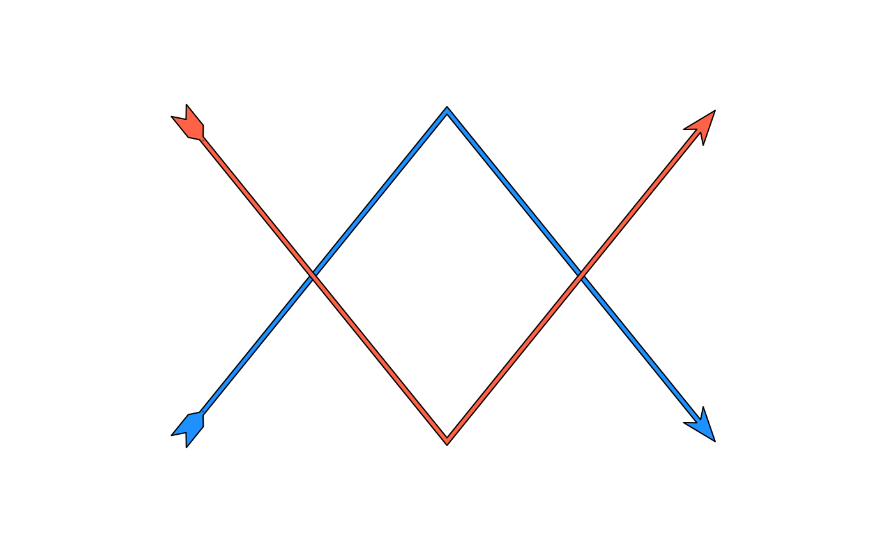

Creates a graphical object that draws arrows. An arrow typically consists of three parts: the arrowhead, the shaft and fins. Relative to how an arrow is drawn from coordinates, these three parts describe the end, middle and beginning of an arrow line.
Usage
grob_arrow(
x = unit(c(0, 1), "npc"),
y = unit(c(0, 1), "npc"),
id = NULL,
id.lengths = NULL,
arrow_head = arrow_head_wings(),
arrow_fins = NULL,
arrow_mid = NULL,
length_head = unit(5, "mm"),
length_fins = NULL,
length_mid = NULL,
justify = 0,
shaft_width = unit(1, "mm"),
mid_place = 0.5,
resect = unit(0, "mm"),
resect_fins = NULL,
resect_head = NULL,
force_arrow = FALSE,
default.units = "mm",
name = NULL,
gp = gpar(),
vp = NULL
)Arguments
- x
A numeric vector or unit object specifying x-values.
- y
A numeric vector or unit object specifying y-values.
- id
A numeric vector used to separate locations in
xandyinto multiple lines. All locations with the sameidbelong to the same line.- id.lengths
A numeric vector used to separate locations in
xandyinto multiple lines. Specifies consecutive blocks of locations which make up separate lines.- arrow_head, arrow_fins, arrow_mid
A
<matrix[n, 2]>, such as those returned by arrow ornament functions, giving arrow shapes. The matrix can (should) have thenotch_angleattribute that will be used to fuse the shaft to the arrow ornaments. IfNULL, no ornament will be drawn.- length_head, length_fins, length_mid
A
<unit>object controlling the size of the arrow ornaments.- justify
A
numeric(1)between [0-1] to control where the arrows should be drawn relative to the path's endpoints. A value of0sets the arrow's tips at the path's end, whereas a value of1sets the arrow's base at the path's end.- shaft_width
A
<unit>object controlling the width of the arrow's shaft.- mid_place
Sets the location of middle (interior) arrows, when applicable. Can be one of the following:
- A
numericvector with values between [0-1] to set middle arrows at relative positions along the arc-length of a path.
- A
<unit> to fill a path with arrows with the provided unit as distance between one arrow to the next.
- A
- resect, resect_fins, resect_head
A
<unit>object that can be used to create an offset between the endings of the coordinates and where the arrow will be displayed visually.resect_finsandresect_headcontrol this offset at the start and end of the arrow respectively and both default toresect.- force_arrow
A
logical(1)which, ifTRUEan arrow will be drawn even when the length of the arrow is shorter than the arrow heads and fins. IfFALSE, will drop such arrows.- default.units
A string indicating the default units to use if
xoryare only given as numeric vectors.- name
A character identifier.
- gp
An object of class
"gpar", typically the output from a call to the functiongpar. This is basically a list of graphical parameter settings.- vp
A Grid viewport object (or NULL).
Examples
requireNamespace("grid")
# Creating an arrow
arrow <- grob_arrow(
x = unit(c(0.2, 0.5, 0.8, 0.2, 0.5, 0.8), "npc"),
y = unit(c(0.2, 0.8, 0.2, 0.8, 0.2, 0.8), "npc"),
id.lengths = c(3, 3),
arrow_head = arrow_head_wings(),
arrow_fins = arrow_fins_feather(),
length_fins = 8,
shaft_width = 1,
gp = grid::gpar(fill = c("dodgerblue", "tomato"), col = "black")
)
# Drawing the arrow
grid::grid.newpage(); grid::grid.draw(arrow)
